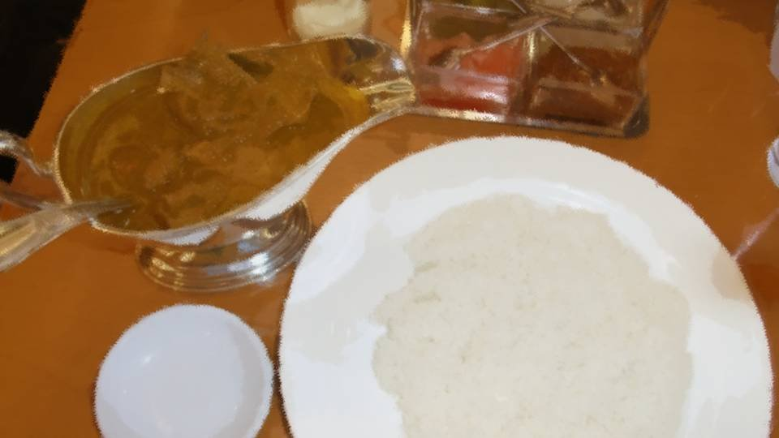

Hidden Things
―What Auntie told me.

Natsumi Kogori, and then,

Erina Goto.
Yesterday, she'd asked these two, who live in Motoki-cho, to help investigate the curse-killings that happen in the Arata settlement.
Yesterday, she'd asked these two, who live in Motoki-cho, to help investigate the curse-killings that happen in the Arata settlement.


"Natsumi-chan...
It's an unkind way to put it, but you could say she was what set off Eiichiro-san's death.
So it seems Natsumi-chan herself has been wanting to pay her respects at one of Eiichiro-san's memorial services someday."
"Mm... But won't that draw too much attention? Two outsiders coming, no less. I just hope it doesn't stir up everyone's fears..."
"Mm... But won't that draw too much attention? Two outsiders coming, no less. I just hope it doesn't stir up everyone's fears..."
"I'll make sure to talk that over with your grandmother.
Besides, we can't keep letting curse-killings happen like this forever."
The curse-killings that have happened every year since Mom died.
Every April, one of the residents is killed.
The curse-killings that have happened every year since Mom died.
Every April, one of the residents is killed.
In the spring 10 years ago, I saw it.

Grandma tried to save Mom, but she wasn't strong enough, and Mom fell from the cliff.
I was the only one who saw everything that happened.
The only ones who know why Mom died are me and Grandma.
The only ones who know why Mom's head was cut off are me, Grandma, and Dad.
Grandma and Dad are convinced I don't know anything.
The only ones who know why Mom died are me and Grandma.
The only ones who know why Mom's head was cut off are me, Grandma, and Dad.
Grandma and Dad are convinced I don't know anything.
Then all I can do is pretend not to know.
I don't know anything.
I don't know anything.
I don't know anything.
I don't know anything.
I don't know anything.
I don't know anything.
But suspicion of Dad began to arise right after Mom died.
I was in fifth grade then, and I couldn't prove Dad's innocence without telling what I'd witnessed.
I was in fifth grade then, and I couldn't prove Dad's innocence without telling what I'd witnessed.
People didn't openly suspect Dad either.
Surely nobody wanted to believe there was a murderer like that inside the settlement.
But it was only natural for suspicion to fall on Dad, who was, on paper, the first to find her.
Surely nobody wanted to believe there was a murderer like that inside the settlement.
But it was only natural for suspicion to fall on Dad, who was, on paper, the first to find her.

If suspicion kept falling on Dad like this, would I lose Dad too this time?
If Dad was suspected, would Grandma be suspected of killing Mom too?
Then it would be just me and Kana, the two of us.
My family would be gone.
If Dad was suspected, would Grandma be suspected of killing Mom too?
Then it would be just me and Kana, the two of us.
My family would be gone.
So... so I.
To protect Dad.
To protect the one Dad shielded, Grandma, too.
So... so what I could do was―
To protect Dad.
To protect the one Dad shielded, Grandma, too.
So... so what I could do was―
"Chigaya-chan, are you all right?"
"Mm... I'm fine. I'm fine..."
"Okay, as long as you are. So that's how things stand. I think this year we'll get a lot closer to solving the curse-killings."
"Mm... I suppose so..."
"Mm... I'm fine. I'm fine..."
"Okay, as long as you are. So that's how things stand. I think this year we'll get a lot closer to solving the curse-killings."
"Mm... I suppose so..."
"Chigaya-chan, are you really all right?
I thought it was good news, but you don't look very happy."
"Mm... Don't I...? Well, if I had to say, I'm worried whether it's really all right to bring high schoolers from Motoki-cho..."
"Mm... Don't I...? Well, if I had to say, I'm worried whether it's really all right to bring high schoolers from Motoki-cho..."
"Goto-chan's brain is truly amazing, so there's nothing to worry about."
"Mm... Then why is this Natsumi girl coming? Even if it is Uncle's memorial service, isn't it dangerous?"
"Mm... Then why is this Natsumi girl coming? Even if it is Uncle's memorial service, isn't it dangerous?"
"Um...
See, Haruka and Goto-chan and Natsumi-chan are always together. That's why..."
The way she'd just said that seemed to carry some hidden meaning.
This Natsumi girl probably has some power that can help solve the case from a different angle than this Goto girl.
The way she'd just said that seemed to carry some hidden meaning.
This Natsumi girl probably has some power that can help solve the case from a different angle than this Goto girl.
"Mm... Auntie, is that really all?"
"Huh?"
"Mm... This Natsumi girl is really coming for just that reason?"
"............"
So she was hiding something after all.
Even if I had to be a little pushy, I needed to get this out of her.
"Huh?"
"Mm... This Natsumi girl is really coming for just that reason?"
"............"
So she was hiding something after all.
Even if I had to be a little pushy, I needed to get this out of her.
"Mm... So there's something about this Natsumi girl.
If you keep it from me and our thinking ends up at cross-purposes, I think even what could be solved won't get solved."
"............"
Come on, say it! Just say it!
There's no way the curse-killings get solved with you hiding things from me!?
"............"
Come on, say it! Just say it!
There's no way the curse-killings get solved with you hiding things from me!?
"Then, Chigaya-chan...
can you say you aren't hiding anything?"
Auntie's tone was very light.
"Something much, much bigger than Natsumi-chan―aren't you hiding something like that?"
But to me, it was very heavy.
Auntie's tone was very light.
"Something much, much bigger than Natsumi-chan―aren't you hiding something like that?"
But to me, it was very heavy.
"Thank you for waiting.
Here are the beef curry and the chicken rice omelette set."
The dishes I'd tactlessly added to our order arrived.
The dishes I'd tactlessly added to our order arrived.

Delicious-looking dishes, set in the gaps around the afternoon tea set―
at least, I think they were.
My eyes didn't go to them.
For some reason, I was out of breath.
My eyes didn't go to them.
For some reason, I was out of breath.
Listening to Auntie, I had forgotten to breathe.
Does Auntie know what I saw 10 years ago?
And even what I've done these 10 years...
Does Auntie know what I saw 10 years ago?
And even what I've done these 10 years...
No, that can't be.
If she did, everyone in the settlement would know too.
For Auntie alone to know, and nobody else... It's a bluff. It has to be a bluff.
I tried to convince myself of that, but even when I looked at the delicious-looking food, I couldn't smell it.
If she did, everyone in the settlement would know too.
For Auntie alone to know, and nobody else... It's a bluff. It has to be a bluff.
I tried to convince myself of that, but even when I looked at the delicious-looking food, I couldn't smell it.
"Chigaya-chan, rather than such gloomy talk, eat up while it's warm. It's really good."
"Mm... Okay..."
Auntie's tone was as light as ever.
But 'rather than such gloomy talk'? Wasn't it Auntie who said she wanted to talk about it...?
"Mm... Okay..."
Auntie's tone was as light as ever.
But 'rather than such gloomy talk'? Wasn't it Auntie who said she wanted to talk about it...?
"Mm... Yeah, it's really good."
The aroma of the curry, rising from my throat to my nose and tickling my nasal passages, was wonderful.
Of all the curries I've ever eaten, it's easily top class.
But even this curry can't be number one.
The number-one curry is one I haven't tasted in over 10 years, though...
The aroma of the curry, rising from my throat to my nose and tickling my nasal passages, was wonderful.
Of all the curries I've ever eaten, it's easily top class.
But even this curry can't be number one.
The number-one curry is one I haven't tasted in over 10 years, though...
"U... uu..."
A sob slipped out without warning―
"What's wrong, Chigaya-chan? Are you all right?"
I'd tasted the curry, and my hand had stopped.
A sob slipped out without warning―
"What's wrong, Chigaya-chan? Are you all right?"
I'd tasted the curry, and my hand had stopped.
It isn't as if this happens every time I eat curry.
It's because talk had turned to Mom, and then to curry.
It's because talk had turned to Mom, and then to curry.


"Today it's your favorite, Chigaya: Enma deer and hell-warden boar mixed curry."
"Mm... Yay! Mom's curry is my favorite! I hope Kana can eat curry soon too!"
"Mm... Yay! Mom's curry is my favorite! I hope Kana can eat curry soon too!"

"Mm-ma-ma!"
"Mm... Kana, do you want some too? When you're old enough to eat curry, let's eat together till we're stuffed!"
"Mm... Kana, do you want some too? When you're old enough to eat curry, let's eat together till we're stuffed!"
The last time I ate Mom's curry was two days before Mom died.
She made it as a get-well celebration when I came back to my senses.
And the one-sided promise I made to Kana, who couldn't even talk yet, never came true.
She made it as a get-well celebration when I came back to my senses.
And the one-sided promise I made to Kana, who couldn't even talk yet, never came true.
Mom used to make omelette rice for me sometimes, too.
I want to eat Mom's curry...
I miss Mom... I miss her...
I want to eat Mom's curry...
I miss Mom... I miss her...
"Uuu...! Uh-uu...!"
"Chigaya-chan, can you eat?"
"Mm... I'm okay, sorry. I can eat it."
I forced the curry into my mouth.
I knew it was very good curry.
But to me just then, it was like chewing mud.
"Chigaya-chan, can you eat?"
"Mm... I'm okay, sorry. I can eat it."
I forced the curry into my mouth.
I knew it was very good curry.
But to me just then, it was like chewing mud.
I could tell perfectly well that the omelette rice was good too.
But the more I ate, the sadder I felt.
I just kept putting curry and omelette rice into my mouth without thinking about anything.
To swallow not the food I'd put in my mouth, but my sobs―
But the more I ate, the sadder I felt.
I just kept putting curry and omelette rice into my mouth without thinking about anything.
To swallow not the food I'd put in my mouth, but my sobs―
―Eventually, the curry and the omelette rice had all been stowed away in my stomach.
By then, my dark feelings had subsided too.
I took a sip of water and let out a big sigh.
By then, my dark feelings had subsided too.
I took a sip of water and let out a big sigh.
"Mm... Gochisosama. That was delicious."
"Chigaya-chan..."
"Mm... Auntie, let's stop the curse-killings for sure. This year, for sure..."
I said it with resolve, but it isn't hard to imagine that my voice had no spirit in it at all.
"Chigaya-chan..."
"Mm... Auntie, let's stop the curse-killings for sure. This year, for sure..."
I said it with resolve, but it isn't hard to imagine that my voice had no spirit in it at all.

―After that, Auntie and I talked about the specifics of the day of the memorial service.
Switching places with Auntie at the succession rite.
And me watching Kana and keeping danger from reaching the Kogori couple.
Judging by how Dad acted this past New Year's, it wouldn't be strange if he started using Kana any time now.
Switching places with Auntie at the succession rite.
And me watching Kana and keeping danger from reaching the Kogori couple.
Judging by how Dad acted this past New Year's, it wouldn't be strange if he started using Kana any time now.
"Mm... Are you really going straight back to Motoki-cho?"
"It's a small company, but there's lots I have to decide on! I'll have to be away from the company for the memorial service, so I've got lots to do right now!"
"Mm... I see..."
"Just in case, I'll send you photos of Natsumi-chan and Goto-chan later. See you in Arata!"
"It's a small company, but there's lots I have to decide on! I'll have to be away from the company for the memorial service, so I've got lots to do right now!"
"Mm... I see..."
"Just in case, I'll send you photos of Natsumi-chan and Goto-chan later. See you in Arata!"
Auntie got into her rental car and drove off.
The next one ends the curse-killings.
The next one... and there'll be... no need to cause a curse-killing anymore.
The next one ends the curse-killings.
The next one... and there'll be... no need to cause a curse-killing anymore.
No...
there shouldn't be any more curse-killings.
Read ✓ Next in this arc →